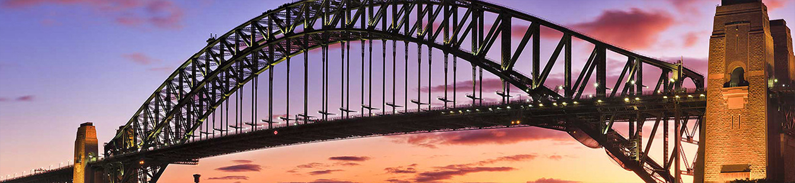
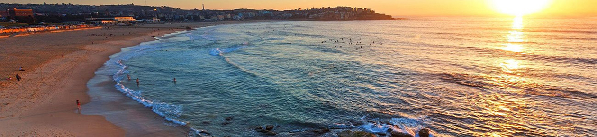
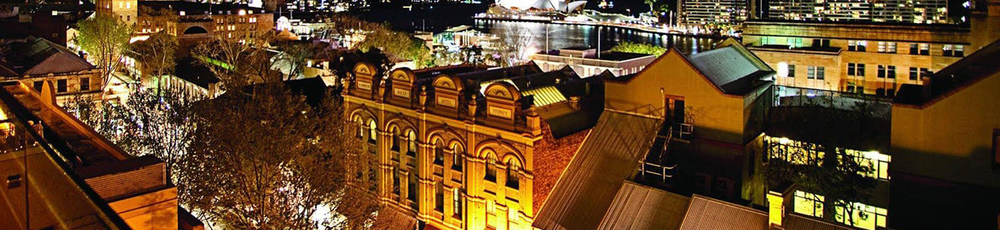
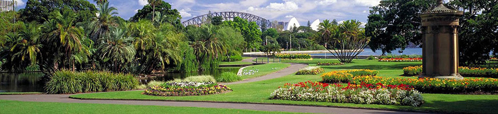

-
Sydney Opera House
La Ópera de Sídney es una fabulosa construcción ubicada en la ciudad del mismo nombre, Sídney (en Australia). Su construcción fue diseñada bajo la inspiración del arte abstracto y se trata de una enorme edificación dedicada a la realización de eventos de ópera, de teatro, piano, sinfonías, entre otras obras de carácter artístico. La obra fue inaugurada el día 20 de octubre del año 1973 por la reina Isabel II, y en dicha ceremonia se lanzaron espectaculares fuegos artificiales mientras se ejecutaba la Novena sinfonía de Beethoven. La Ópera De Sydney cuenta con cinco teatros, cinco estudios de ensayo, dos salas principales, seis bares, cuatro restaurantes y varias tiendas de recuerdos. Éste emblemático edificio es el principal lugar turístico para visitar y disfrutar en Sydney. Quedará maravillado al comtemplar su interesante diseño y arquitectura.
Impresionante, moldeador de cultura.
-
Sydney Harbour Bridge
Súbase a un ferry en Circular Quay y pase por la Ópera de Sídney y el Puente del Puerto de Sídney hasta el zoológico de Taronga . Hay todo tipo de cruceros por el puerto , incluidos cruceros para el almuerzo, barcos altos y un crucero de patrimonio cultural aborigen. El canotaje también es popular si sabes cómo conducir un barco.
Caminar es una excelente manera de ver el puerto, que también se conoce como Port Jackson. Encontrarás varios paseos con magníficas vistas de los famosos monumentos de Sydney. Uno de los mejores paseos por la ciudad del mundo es desde Woolloomooloo hasta Barangaroo, y se detiene en la silla de la Sra. Macquaries para tomar una postal perfecta.
Observe la vida silvestre nativa en el Parque Nacional del Puerto de Sydney, que incluye The Heads, los espectaculares acantilados de arenisca a la entrada del puerto, protege las islas del puerto circundante. Los focos de matorrales albergan pájaros coloridos, como loris arcoíris y rosellas carmesí, y puedes ver pequeños pingüinos cerca del muelle de Manly.
Reveladora, que cambia la vida.
 -
Playas de Sydney
Entre las playas más famosas de Sydney se encuentran: Bondi, Coogee y Manly. Debido al clima cálido de Sydney, sus playas atraen turistas de todas partes del mundo durante la mayor parte del año. También, se debe destacar que sus playas poseen agua clara y limpia lo que las hace aún más atractivas. Es muy común ver deportistas practicando surf, windsurf, kayak y voleyball de playa entre otras actividades.
La Playa de Bondi es indiscutiblemente la playa más famosa que ver en Sydney; de hecho, incluso es considerada como una de las mejores playas del mundo. Ubicada a únicamente 15 minutos del centro de la ciudad, luce una apetecible arena blanca y un mar azul turquesa capaz de enamorar a cualquier surfero. Te recomendamos, además de disfrutar de unos buenos días de desconexión en este pequeño paraíso, hacer la ruta que va desde Bondi a Cooge Beach; un recorrido con el que podrás deleitarte con unas increíbles vistas costeras que merecen mucho la pena.
En la zona de las playas más visitadas se pueden encontrar también parques, tiendas, restaurantes, bares y disfrutar de paseos.
"Un recorrido detallado con guías entretenidos e informados. Lo disfruté tanto que incluso podría volver a hacerlo"
Díario New York Times - 2017 -
The Rocks, el barro más antiguo y Newtown: el barrio más bohemio de la ciudad.
El cuarto de nuestros lugares imprescindibles que ver en Sydney es el barrio más antiguo de la ciudad, por lo que es una muestra ideal de su esencia. Para disfrutar de esta zona, no tendrás más que sorprenderte con todo lo que encontrarás paseando por sus calles. Durante tu paseo podrás descubrir las primeras edificaciones que formaron parte de la ciudad, visitar museos tan importantes como el de Arte Contemporáneo o el del Descubrimiento y degustar la auténtica gastronomía australiana en alguno de sus locales con música en directo.
Y del barrio más antiguo, pasamos al más bohemio: Newtown te sorprenderá por ser la zona más alternativa que ver en Sydney. Una zona perfecta para caminar y descubrir lugares con mucho encanto o artistas callejeros que te entretendrán durante un buen rato. ¡Aquí las expresiones artísticas son ilimitadas! Podrás encontrar numerosas tiendas de arte, algunas con objetos verdaderamente antiguos, diseñadores de moda profesionales y distintos restaurantes donde disfrutar de una buena cena.
Te recomendamos que no dejes de tomar algo en alguno de sus rooftop bars, que están algo escondidos.
Descubre la historia y guarda un recuerdo.
 -
Royal Botanic Gardens
Con más de 30 hectáreas, el Real Jardín Botánico de Sydney es la zona verde más importante que ver en Sydney. Situado cerca de la Ópera, en él pueden apreciarse distintas especies pertenecientes a la flora local; composiciones florales, helechos o árboles centenarios. Se trata de un lugar ideal tanto para practicar deporte (yendo en bici, haciendo footing…) como para descansar y poder desconectar realizando un buen picnic o leyendo un buen libro disfrutando de la tranquilidad del lugar. ¡Perfecto para disfrutar del contacto con la naturaleza en plena ciudad!
A pocos pasos de Circular Quay y Hyde Park, el jardín tiene miles de especímenes de plantas. La vida silvestre en el jardín incluye pájaros coloridos, murciélagos frutales y dragones de agua. Descubra la rica historia aborigen de la zona en el tour guiado de 90 minutos del patrimonio aborigen. Explorarás los usos y la cultura tradicionales de las plantas y probarás algunos alimentos del arbusto. Las reservas son esenciales. El recorrido sale a las 10 a.m. los miércoles, viernes y sábados, y está disponible para grupos bajo petición.
La entrada es gratuita a los jardines, abierta todos los días desde las 7 a.m. Las estaciones de tren más cercanas son Circular Quay y Martin Place.
Un remanso de paz en la ciudad.

Qué ver en Sydney | En vídeo
Esperamos que te haya gustado nuestra recopilación; en cualquier caso, si quieres ver más imágenes de este fantástico destino, no te pierdas nuestro vídeo. Hemos preparado un vídeo recopilación de los mejores lugares que ver en Sydney en el que podrás encontrar más imágenes de cada uno de ellos.
¡Un estupendo resumen para que planificar tu viaje sea todavía más rápido!